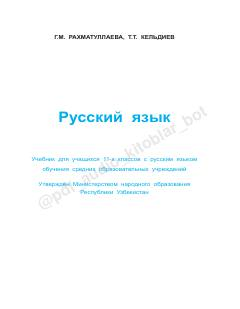

РЯ11-sinf o'quvchilari uchun rus tili fanidan nazariy va amaliy o'quv qo'llanma.
Ushbu darslik O'zbekiston umumiy o'rta ta'lim maktablarining 11-sinf o'quvchilari uchun mo'ljallangan. Kitob rus tili sintaksisi, punktuatsiyasi, uslubiyati va nutq madaniyati bo'yicha nazariy ma'lumotlarni tizimlashtiradi hamda amaliy mashqlar bilan boyitilgan.